0. 全体の流れ
トップページ（入口）
アドレスをそのまま開く（末尾に何も付けない）と トップページ（index.html）が出ます。入口は 2 つだけです。
- ＋ 大会を新規作成 … テンプレート・コピー・完全新規から選んで大会を作ります（§1「大会を作る」）。
- ▶ 作成済みの大会 … いまある大会の一覧です。行を押すと、その大会の運営画面が直接開きます。
一覧は 採点中 → 準備中・巡目終了 → 最終結果 の順に並び、5 件まで出ます。残りは すべて見る で開きます。アーカイブ済みの大会は下の ▸ アーカイブ（n 件） に畳まれます。システムテスト用 のテンプレートで作った大会は既定で隠れていて、テストも表示 にチェックを入れると テスト の印付きで出ます。
入口の下の小さなリンクから 採点画面・順位表示・ヘルプ へ行けます。コート端末の方はここから採点画面へ入ってください。アプリの説明と 8 段階の流れは ▸ このアプリについて に畳まれています。
右上の 🖥 / 📱 は、運営画面の行き先を PC 用（desk.html）とスマホ用（admin.html）で切り替えるボタンです。押した端末に控えられるので、次に開いたときも同じほうが出ます。
index.html だった頃のブックマーク）を開くと、自動で scoring.html に移ります。コートのタブレットのブックマークは貼り替えなくて構いません。大会は、大会を作るところから発表までを一本の流れで進めます。
一巡目＝全員が1回ずつ斬る回です。二巡目＝同じ選手がもう1回斬る回です。得点は一巡目と二巡目を合わせた合計で競います。
大会には 状態 があります。運営者が 次へ進む のボタンで1段ずつ進め、自動では変わりません。
- 準備中 — 技と配点・選手を自由に入れられます。採点はまだできません。
- 一巡目 進行中 — コートの端末で一巡目を採点します。
- 二巡目準備（形の登録） — 一巡目を終了すると、二巡目の行が自動でできます（形は一巡目と同じ）。自己申告があった選手の形だけ直します。
- 二巡目 進行中 — コートの端末で二巡目を採点します。暫定ベスト8（決戦）はまだ斬りません。
- 決戦 進行中 — 暫定ベスト8 が決戦コートで1人ずつ斬ります。採点できるのは決戦コートだけです。
- 二巡目終了 — 順位を確かめます。直したいことがあれば1つ前に戻せます。
- 最終結果 — 得点・選手・技を編集できなくなります。発表・共有・ファイル保存はできます。
- アーカイブ — 見るだけ。大会一覧の「アーカイブ」欄に移り、採点画面の選択肢から消えます。
大会のデータはサーバーに1つだけあります。運営者の PC もスマホも、各コートのタブレットも、同じ大会を読み書きします。
図の各段が、上に並べた 8 つの状態です。段と段の間は、運営画面の 次へ進む のボタン（試合開始 ▶ 一巡目を終了 ▶ …）で進みます。運営画面で状態を進めないと、コートの端末は採点できません。
1. 大会の作成
大会前の準備
前日までに 技術リスト編集（techniques.html）を開いて、技名と配点が今年のものになっているか確かめてください。
配点は大会ごとです。画面の上の 編集する対象 で、雛形（新規大会の初期値） かどの大会かを選びます。雛形を直しても、すでにある大会の配点は変わりません。大会を作る前に雛形を直しておくと、その後に作る大会にそのまま入ります。
大会を作る
いちばん簡単なのはトップページからです。トップの ＋ 大会を新規作成 を押すと、4 つの作り方から選べます。
- 前回の大会をコピー … 直近に触った大会（テスト大会とアーカイブ済みを除く）をそのままコピーします。毎回の大会はこれがいちばん速いです。
- テンプレートから … 下の 3 種類から選びます。
- 作成済みの大会からコピー … 元にする大会を選んでコピーします（アーカイブ済みも選べます）。
- 完全新規 … 名前・日付・会場だけの空の大会です。技と配点は雛形から入ります。
どれを選んでも、次の画面で 大会名・日付（今日が入っています）・会場 を入れて 作成 を押します。作ったあとは、その大会の 選手登録 が開きます。
テンプレート 3 種
- 稽古用 … 技と配点は雛形のまま。コートは 稽古 の 1 つ。選手は 0 名。道場の稽古でその場の何人かを採点するとき。
- 大会用 … 技と配点は雛形のまま。コートは A・B。ゼッケン番号を必須にする が入った状態。選手は 0 名。本番の大会を一から作るとき。
- システムテスト用 … 大会用 に加えて、ダミーの選手 20 名（男子01〜10・女子01〜10、ゼッケン 1〜20、A と B に交互、技も入っている）。初めての人が練習する・新しい端末で通しの確認をするとき。
運営画面には PC 用（desk.html）と スマホ用（admin.html）があります。中身は同じ大会で、ヘッダーの 🖥 / 📱 でいつでも行き来できます。当日の受付や名簿の打ち込みは PC 用が向いています。
PC 用（desk.html）:
- 左の区画で 大会一覧 を選ぶ。
- 右上の ＋ 新規作成 を押す。
- 大会名・日付・会場 を入れて 作成。選手登録 の区画が開きます。
スマホ用（admin.html）:
- タブ（画面の下）で 大会 を選ぶ。
- 右上の ＋ 新規大会 を押す。
- シートで 大会名・日付・会場 を入れる。
- 作成 を押す。一覧に大会が増えます。
去年の大会をコピーして作る
トップページの ＋ 大会を新規作成 → 作成済みの大会からコピー でも同じことができます。運営画面からやる場合は次のとおりです。
PC 用の 大会一覧 で、元にする大会の行の ⋯ → 📄 コピーして作成 を押します。
- 大会名（「元の名前（コピー）」が入っています）・日付（今日）・会場 を直します。
- 選手も複製する（得点は消す） にチェックを入れると、元の大会の一巡目の選手だけが、名前・コート・性別・新人・技をそのままに、得点 0 で入ります。二巡目の行は複製しません。
- 技と配点は必ず複製されます。共有リンクと配信用ボードのアドレスは引き継ぎません。
できた大会は 準備中 です。アーカイブ済みの大会からもコピーできます。
基本情報（コート・必須の設定）
PC 用の運営画面で大会を開き、左の 基本情報 を選ぶと、大会名・日付・会場のほかに コート一覧 を編集できます。
- ＋ コートを足す でコート名（A など）を入れます。選手が 1 人もいなくても、そのコートが選手登録のコート候補と 試合進行 のカードに出ます。
- 足したコートは × で外せます。灰色のコート（「A（選手あり）」）は選手のコート指定から決まったもので、外せません。外すときは 選手 の区画でその選手のコートを変えます。
- コート名の決まり: 空・-・未分類 は使えません。32 文字まで、同じ名前は 1 つだけ、20 コートまでです。
- 足した・外したあとは 保存 を押してください（上の 保存 でも同じように保存されます）。
同じ画面の ゼッケン番号を必須にする / 級位・段位を必須にする は、一巡目にその項目が空の選手がいる間だけ 試合開始 ▶ で止めるための設定です（§2 の「当日の流れ」）。登録そのものは空のままできます。
終わった大会を片づける（アーカイブ）
最終結果 まで進んだ大会は アーカイブ にできます。上部の アーカイブ ▶、または大会一覧の行の ⋯ → 📥 アーカイブ です。
- 大会一覧では、下の ▸ アーカイブ（n 件） に畳まれます。当日の大会と混ざりません。
- 採点画面の大会の選択肢から消えます。押し間違えて去年の大会に採点してしまう事故を防ぐためです。
- 見るだけはできます。共有リンクと発表モードもそのまま開けます。
- 戻すときは上部の ◀ 最終結果 に戻す です。
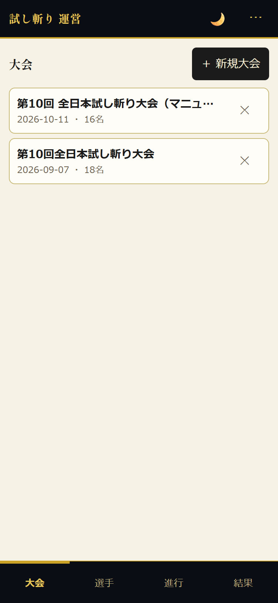
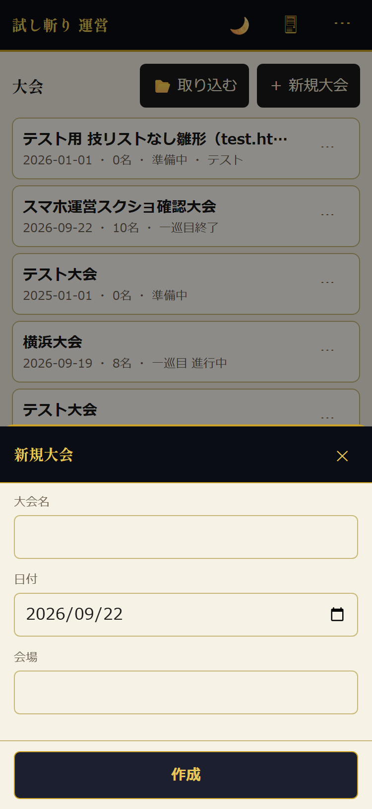
別のサーバーや PC から取り込む
ほかのサーバーで作った大会を、そのまま持ってこられます。大会情報・技の配点・選手（採点済みの得点も）・採点履歴が一緒に入ります。
- 持ち出す側の運営画面で、大会タブの行の ⋯ → 💾 ファイルに保存 を押す。
tameshigiri_日付_大会名.jsonが保存されます。 - 取り込む側の運営画面で、大会タブの見出しの 📂 取り込む を押し、そのファイルを選ぶ。
- 大会を取り込みました（n 名） と出て、選手登録タブが開きます。
選手を登録する
タブで 選手登録 を選びます。登録のしかたは3通りあります。
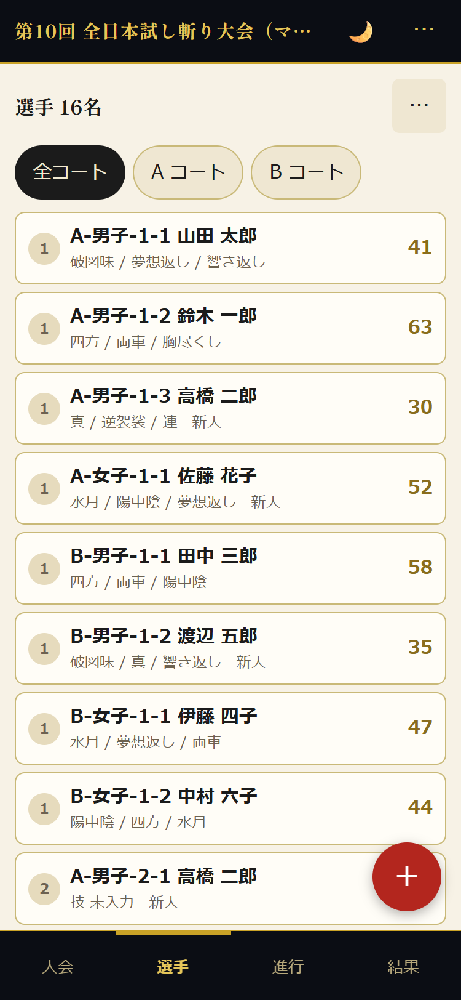
（a）1人ずつ登録する
右下の赤い ＋ を押すと 選手を追加 のシートが開きます。
- 名前 を入れる。
- コート を選ぶ（A B、＋ で増やせます）。
- 性別 を選ぶ（男子 女子）。
- 新人なら 新人 にチェックを入れる。
- ゼッケン番号 を入れる（1〜9999 の整数。空でも登録できます）。同じ大会の中で同じ番号は使えません。すでに使われている番号を入れると ゼッケン番号 12 は「山田 太郎」が使っています と出ます。
- 級位・段位 を入れる（無級 十級〜一級 初段〜十段 の候補から選べます。錬士六段 のように自由にも書けます。20 文字まで）。
- 真剣を借りる選手は 真剣レンタル にチェックを入れる。チェックすると、技の候補が抜刀後の形だけになります（下の「技の選び方」）。
- 技を ① ② ③ の枠ごとにタップして選ぶ。
- 保存して次を追加 で続けて登録、保存して閉じる で終わります。
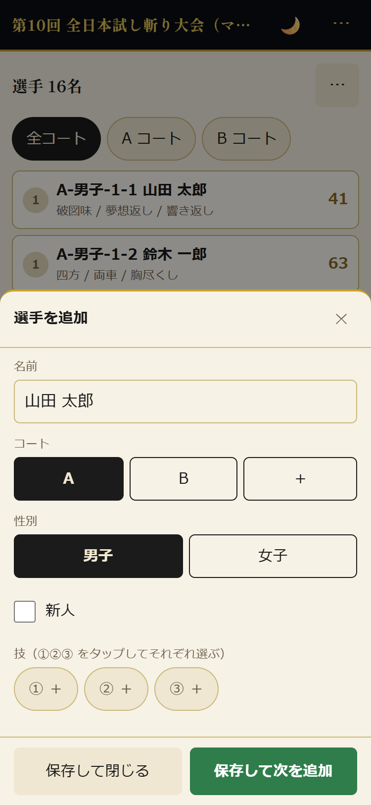
（b）複数人をまとめて登録する
右上の ⋯ → 👥 複数人をまとめて登録 を押します。
- コート・性別・新人 はその場の全員に共通で付きます。
- 名前（1行に1人） の欄に名簿を貼り付けます。下に人数が出ます。
- 登録 を押すと A コート 男子 4 人を登録します。よろしいですか？ と確認が出ます。OK でまとめて入ります。
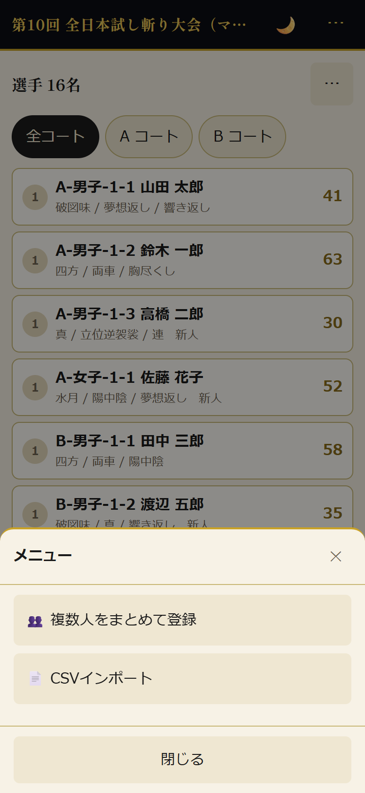
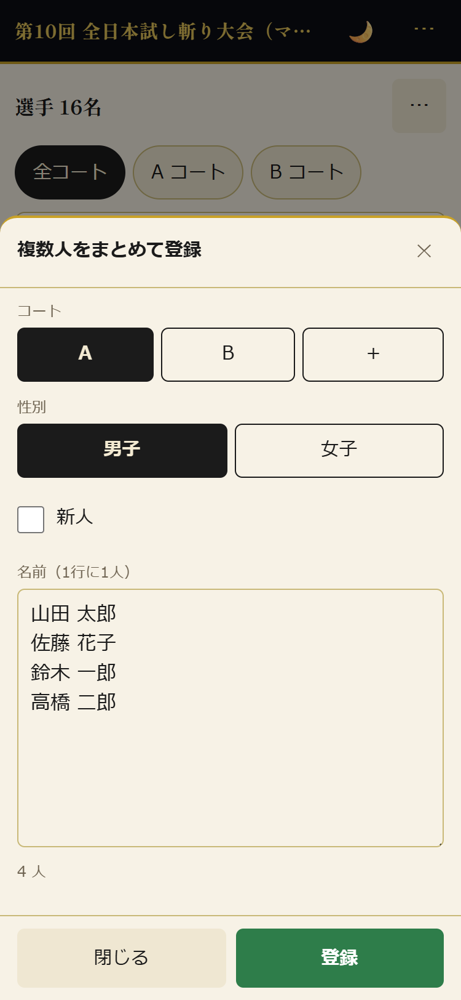
（c）CSV で読み込む
右上の ⋯ → 📄 CSVインポート を押し、ファイルを選びます。
いちばん簡単な形は次の7列です。1行目は見出し行で、2列目が「コート」であれば、この形として読みます。
- 性別は 女 女子 ○ F f のいずれかで女子、ほかは男子になります。
- 新人は ○ 1 はい 新人 のいずれかで新人になります。
- 順番はサーバーが自動で採番します。CSV に書く必要はありません。
- コート名は32文字までです。- は使えません。未分類 も使えません。
採点画面の CSVエクスポート が出す従来の形（選手名 順番 … の15列）もそのまま読み込めます。この形では順番は CSV の値をそのまま使います。
すでに選手がいる大会に読み込むと、確認が順に出ます。
- 既存データをクリアして読み込みますか？（キャンセルで追記） — OK でクリア、キャンセル で追記になります。
- クリアを選び、採点済みの選手がいるときは、失われる人数を示してもう一度確認します。他のコートの採点も一緒に消えます。
- 追記を選ぶと 同じ順番の選手がいると重複します。追記しますか？ と別の確認が出ます。
（d）PC の表に打ち込む・Excel から貼り付ける
PC 用の運営画面（desk.html）の 選手登録 の区画は、1人1行の編集できる表です。名前・ゼッケン・級位段位・レンタル・コート・性別・新人・技1〜3のセルをその場で直せます。直したセルから離れる（Tab や Enter、ほかの場所をクリック）と、その項目だけが保存されます。
表の上には ゼッケン未入力 3 級位段位未入力 1 レンタル不可の形 2 同じ形 2 回 1 のように、このままでは試合を開始できない件数が赤く出ます。該当するセルは赤い枠になります（必須なのに空は点線、レンタルの選手が選べない形は実線）。0 件になると消えます。
- ＋ 行を追加 で末尾に空の行が増えます。名前を入れて確定すると登録されます。コート・性別・新人は1つ上の行と同じものが入ります。
- 見出しの ▼ で列ごとに絞り込めます（コート・性別・新人・巡・技が未入力の行だけ）。名前は ▼ の中の検索欄で部分一致します。
- 表の上に 表示 n / N 名 と出ます。絞り込み中は 絞り込みを解除 で戻せます。
- 並べ替えは見出しの文字（▼ の外）をクリックします。
- 行の ⋯ から削除できます。採点済みの選手を消すときは確認が出ます。
Excel の名簿からまとめて入れるときは 📋 貼り付けて追加 です。
- Excel で 名前・コート・性別・新人・技1・技2・技3・ゼッケン・級位段位・レンタル の 10 列を、この順に並べて選び、コピーします。右側の列は無くてもかまいません（7 列までのこれまでの名簿もそのまま読めます）。
- 📋 貼り付けて追加 を押し、開いた欄に貼り付けます。
- 読み取った内容が一覧で出ます。1行目が「名前」で始まっていれば見出しとして飛ばします。
- 技リストに無い技名は赤く示されます。その行は送られないので、技名を直してから貼り直してください。
- 件数を確かめて 登録 を押します。
名前だけの行でも登録できます。足りない列は 性別＝男子・新人＝なし・技＝空 として読みます。コートの列が空の行には、貼り付け欄の上の コートが空の行に使うコート で選んだコートが入ります（下見の一覧では、補ったコートが薄い字で出ます）。コートを選んでいないと、コートの列が空の行は赤くなって登録できません。男女で配点が分かれる技は 破図味 のように接尾辞なしで書けます（行の性別で解決します）。
- タブ区切り（Excel からのコピー）とカンマ区切りのどちらでも読めます。
- 性別は 女子 女 F で女子、ほかは男子です。新人は 新人 ○ 1 true で新人です。レンタルは レンタル あり ○ 1 true でレンタルです。
- ゼッケンは数字だけです（数字以外は ゼッケン番号は数字で で断られます）。貼り付けた行どうしの重複も、すでに登録されている選手との重複も断ります。
- レンタルの行に抜刀後でない形が書いてあると、その行は赤くなって登録できません。
- 順番はサーバーが自動で採番します。
- 1行でも不正があると、1人も登録されません（半分だけ入った状態を作りません）。
技の選び方
技の枠（① ② ③）をタップすると、技を選ぶシートが開きます。
- 上の欄に技名を打つと絞り込めます（技名で絞り込み）。
- 見出し行は 技名 初太刀 二ノ太刀 三ノ太刀 四ノ太刀 で、右側の数字がその太刀の配点です。
- — はその太刀を打たないという意味です。採点画面でも灰色になり、押せません。
- いちばん上の （この枠を空にする） を選ぶと、その枠を空にできます。
技は一巡目・二巡目とも3つ入れるのが基本です。事情があれば2つでも採点はできます。
ここに出る技と配点はその大会のものです。直すときは、運営画面の右上 ⋯ → 🗒 技術リスト編集（選択中の大会のものが開きます）、または採点画面の上のリンク 技術リスト編集 から開きます。PC 用は左の 技と配点 です。
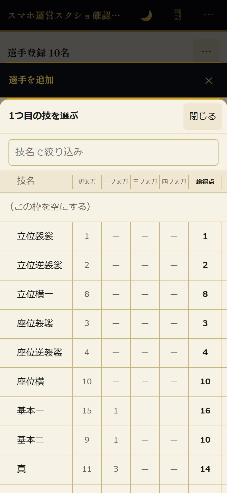
選手を探す（絞り込み・並べ替え）
表の上のチップで絞り込めます。全コート / A コート、男女 / 男子 / 女子、全巡 / 1巡 / 2巡 は1つを選びます。新人 と 技未入力 は押すたびに入・切が切り替わります。条件は重ねられます（例: A コート と 技未入力 で、Aコートで技がまだ入っていない人だけ）。
検索欄に名前の一部を入れると、その文字を含む人だけになります。姓と名の間の空白は無視します。
表の見出し No / 名前 / 得点 を押すと並べ替えられます。もう一度押すと逆順です（▲ が昇順、▼ が降順）。1巡 に絞って 得点 を降順にすると一巡目の順位、全巡 のまま降順にすると巡目をまたいだ順位になります。
選手を直す・消す
選手登録タブの行をタップすると 選手を編集 のシートが開きます。名前・コート・性別・新人・技を直して 保存 を押します。
- 採点済みの選手の性別や技を変えると この選手は採点済みです（n点）。得点が変わる可能性があります。採点画面でこの選手を開き直してください。 と確認が出ます。得点はサーバーでは計算し直されないので、採点画面で開き直してください。
- 同じシートの この選手を削除 で消せます。一巡目の選手を消すときは 二巡目の行は残ります。 と断りが出ます。
- 採点済みの選手を消すときは 削除すると採点結果は戻せません。 ともう一度確認が出ます。
順番の付きかた
順番は コート-性別-巡目-番号 の形で自動で付きます。たとえば A-男子-1-1 は「A コートの男子、一巡目の1番」です。
二巡目の並び順は一巡目と変わります。§2 の「二巡目の並び順」を見てください。
2. 採点の進行
端末の役割（A・B の2コートの例）
運営者は1台のスマホで運営画面を、各コートは1台ずつのタブレットで採点画面を開きます。
当日の流れ（8つのボタン）
当日は運営画面の上に出ている 次へ進む のボタンを、順に押していくだけです。PC 用では左の区画の 試合進行 を開いて進めます（スマホ用では 試合進行 タブです）。
- 試合開始 ▶ — 一巡目 n名。技が未入力の選手が m名います。試合を開始しますか？ の確認で OK。一巡目 進行中 になり、採点画面が別のウィンドウで開きます。
- 基本情報 で ゼッケン番号を必須にする にしていて、一巡目にゼッケンが空の選手がいる。
- 級位・段位を必須にする にしていて、一巡目に級位・段位が空の選手がいる。
- 真剣レンタル の選手に、抜刀後 でない形が入っている。
- 一巡目に、回数制限なし でない同じ形を2枠以上選んでいる選手がいる。
- コート別の状況を見る — 試合進行 の区画に、コートごとのカードが並びます（下の節）。
- 一巡目を終了 ▶ — 全コートの採点が済んだら押します。押した時点で二巡目の行が自動でできます（形は一巡目と同じ。暫定ベスト8 は決戦コートに移ります）。
- 形を直す — 二巡目の形登録 の表で、自己申告があった選手の形だけ直します（下の節）。
- 二巡目を開始 ▶ — 二巡目 進行中 になります。コートの端末で大会を選び直すと二巡目の選手が出ます。決戦コートはまだ採点できません。
- 決戦を開始 ▶ — 決戦以外が全員斬り終わったら押します。決戦 進行中 になり、採点できるのは決戦コートだけになります。
- 二巡目を終了 ▶ — 結果確認 の区画で順位を確かめます。
- 最終結果を確定 ▶ — 得点・選手・技を編集できなくなります。そのあと アーカイブ ▶ で片づけます。
コート別の状況を見る（PC 用の「試合進行」）
PC 用の 試合進行 の区画には、コートごとにカードが1枚ずつ並びます。
- A コート — コートの名前。
- 採点済み 5 / 8 — いま採点している巡目の進み具合。全員終わると緑になります。
- いま採点中: 山田 太郎 — そのコートの端末が開いている選手です。誰も開いていなければ 待機中。
- 採点画面を開く — そのコートの採点画面を別のウィンドウで開きます。同じコートは同じウィンドウを使い回します。
- URL をコピー — 採点画面のアドレスを写します。コートのタブレットにメッセージで送るときに使います。
開いた採点画面の URL には大会とコートが入っています（scoring.html#event/大会ID/コート）。この URL のおかげで、当日はタブを閉じたり端末を再起動したりしても、同じ大会・同じコートに戻れます。
採点画面の見方
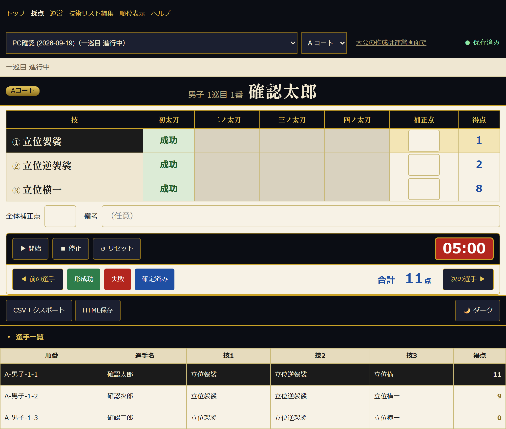
- ①大会バー — 大会とコートを選びます。右の ● 保存済み がサーバーへの保存の様子です。大会の作成と削除は運営画面にあります（バーの 大会の作成は運営画面で のリンクから開けます）。選択肢にはアーカイブ済みの大会は出ず、採点できる大会が先頭に並びます。
- ②選手の帯 — コートのバッジは帯の左端に小さく付きます。中央に「男子 1巡目 1番」のような順番と選手名が並んで出ます。前後の選手へのボタンはこの帯には無く、⑤の操作区画に移りました。
- ③採点表 — 技名をタップするとその行が選ばれます（黒く反転します）。太刀のセルは押すたびに 未 → 成功 → 失敗 → 未 と変わります。灰色のセルは、その技で打たない太刀です。行がまるごと灰色で得点の欄も空のときは、その技名が技術リストに無い状態です（配点を引けず0点のままになります）。§5 の「技が見つからない」を見てください。補正点 はその技だけに効き、マイナスも入れられます。得点 はその行の合計で、こちらは自動です。胸尽くしなど「減点初太刀」が設定された技は、初太刀のセルだけ 未 → 成功 → 減点 → 失敗 → 未 と一段増えます。減点（黄土色。切先が鞘から抜けていたときの成功）は失敗ではないので、後ろの太刀は無効になりません。得点はその技に設定した「減点初太刀」の点になります。
- ④全体補正点・備考 — 全体補正点 は選手全体に効きます。備考 は得点に影響しません（200文字まで）。右の 文例 ボタンを押すと「間合い確認・素振りをしたため無効」などのよくある理由を一覧から選んで備考の末尾に追記できます（2つ目以降は「、」で区切られ、同じ文例は二重に足されません）。
- ⑤操作区画 — 1段目がタイマー（▶ 開始 ■ 停止 ↺ リセット。5分から0へ向かって数え、選手を切り替えると自動で 05:00 に戻ります）、2段目が ◀ 前の選手 形成功 失敗 確定 次の選手 ▶（右端に 合計）です。形成功 失敗 はどちらも選択中の行にだけ効きます。形成功 は打つ太刀を全部「成功」に、失敗 は最初の「未」のセルだけを「失敗」にします（すでに成功・失敗のセルは変えません）。確定 を押すと 確定済み になり、得点と合計が青くなります。得点に関わる編集をすると、自動で確定が外れます。
- ⑥ツールバー — CSVエクスポート で全選手の内訳を、HTML保存 で成績表を保存できます。🌙 ダーク で暗い配色に切り替わります。
- ⑦選手一覧 — 順番・ゼッケン・選手名・技1〜3・得点の表です。行をタップするとその選手に切り替わります。見出しの ▾ 選手一覧 で開閉できます。
採点は太刀の順番どおりに行います。 前の太刀（配点のある太刀）が 未 のままだと、後ろの太刀は薄く表示されて押せません。一ノ太刀から順に成功・失敗を付けていくと、次の太刀が押せるようになります。
一つの形で途中失敗したら、それ以降の太刀は自動で無効になります。 太刀を 失敗 にすると、同じ行のそれより後ろの太刀（配点のある太刀だけ）は押せなくなり、セルが灰色で「無効」とその太刀の元の点数（○ だったときの配点）が表示されます。無効になった太刀は0点として合計されるので、その形は最初の失敗より前に成功した太刀の点数（と補正点）だけが入ります。失敗を 成功 や 未 に戻すと、後ろの太刀も元どおり押せる「未」に戻ります（後ろの太刀に値が入っていた場合はまとめて「未」に戻ります）。失敗 ボタンは行のいちばん最初の「未」を失敗にするので、押すと残りの太刀がまとめて無効になります。以前に採点した選手を開き直したときも同じ規則で表示されますが、確定し直すまでは保存済みの得点は変わりません。
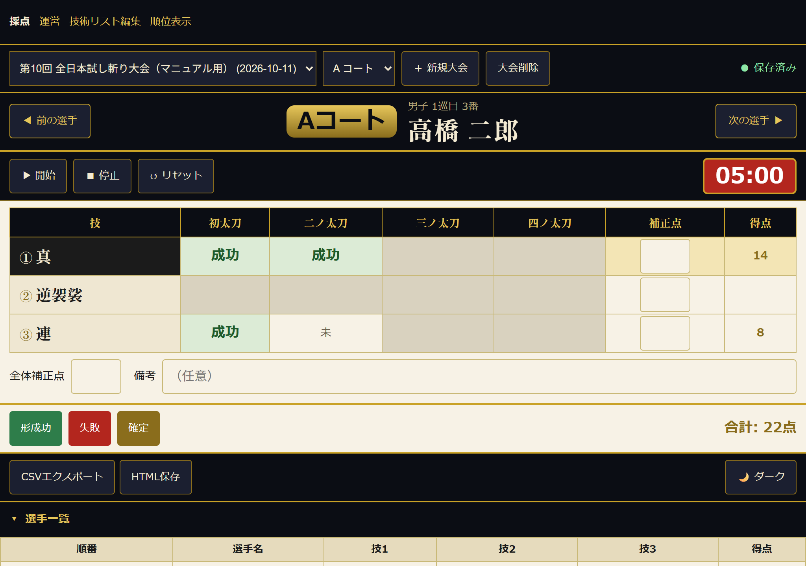
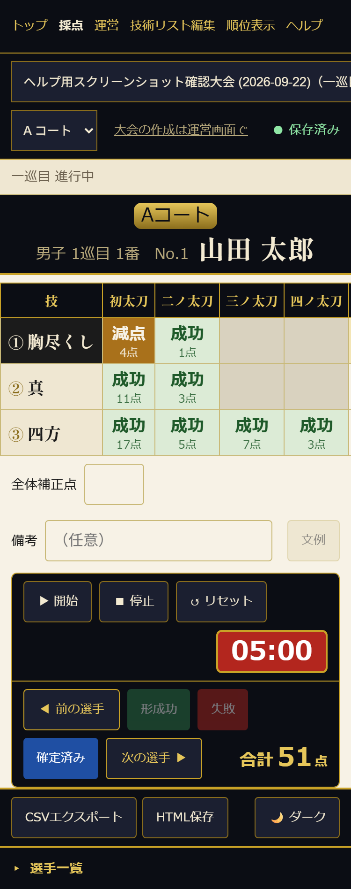
採点画面の状態バナー
採点画面では、大会を選ぶバーのすぐ下に今の状態が出ます。
- 一巡目 進行中 / 二巡目 進行中 — 採点できます。選手一覧にはその巡目の選手だけが並びます。
- この大会は「準備中」です。運営画面で「試合開始」を押すと採点できます。 — 運営画面で状態を進めてから、この画面で大会を選び直してください。
- この大会は「最終結果」です。得点は編集できません。運営画面で「戻す」を押すと編集できます。 — 確定後は、サーバーが得点の保存そのものを断ります。
採点できない状態のときは 確定 形成功 失敗 と得点・補正点・備考の入力が無効になります。前後の選手の移動・タイマー・CSVエクスポート・HTML保存 は使えます。
二巡目の形を直す
一巡目を終了 ▶ を押すと、二巡目の行が自動でできます（形は一巡目と同じ）。ここでは 自己申告があった選手の形だけ 直します。
- 上に 採点済み 8 / 8 のように進み具合が出ます。全員終わっているか確かめてから 一巡目を終了 ▶ を押します。
- できた表で、自己申告があった選手の技を直します。3つ入れるのが基本です。
PC 用では、二巡目が 巡・No.・名前・一巡目の得点・技1・技2・技3 の表になります。
- 技は選ぶだけで保存されます。まだ空の枠は赤い枠で示されます。
- 行の右の 一巡目と同じ形に戻す で、その選手の一巡目の技がそのまま入ります。
- 表の上の 全員に一巡目と同じ技をコピー（n 名） は、技が空の選手が1人以上いるときだけ出ます。まとめて入れられます。対象は技が3つとも空で、まだ採点していない行だけです（途中まで入れた行と採点済みの行は上書きしません。件数がボタンに出ています）。
- 二巡目 8名 技 未入力 3 で、技がまだの人数が分かります。0 になると緑になります。
技が入ると、各コートの採点画面の選手一覧に二巡目の選手が並びます。
スマホ用の 試合進行 タブでも同じことができます。こちらは1人1枚のカードで、① ＋ ② ＋ ③ ＋ の枠をタップして技を選びます。
二巡目の並び順
二巡目の番号は、同じコート・同じ性別の中で、一巡目の得点が低い人から 1番・2番…と付きます。男子と女子は別々に数えます（例: A-男子-2-1 は A コートの男子で一巡目がいちばん低かった人）。一巡目とは出番の順が変わるので、番号を読み上げるときは気をつけてください。
並び方は画面で違います。コートの端末の選手一覧では二巡目の女子が先に並び、運営画面の試合進行タブ・選手登録タブ・PC の試合進行では男子が先に並びます。どちらも中身は同じで、出番はコートの端末の選手一覧の順です。
コートが決まっていない選手の二巡目は作れません。選手登録タブでコートを設定してから、あらためて確かめてください。
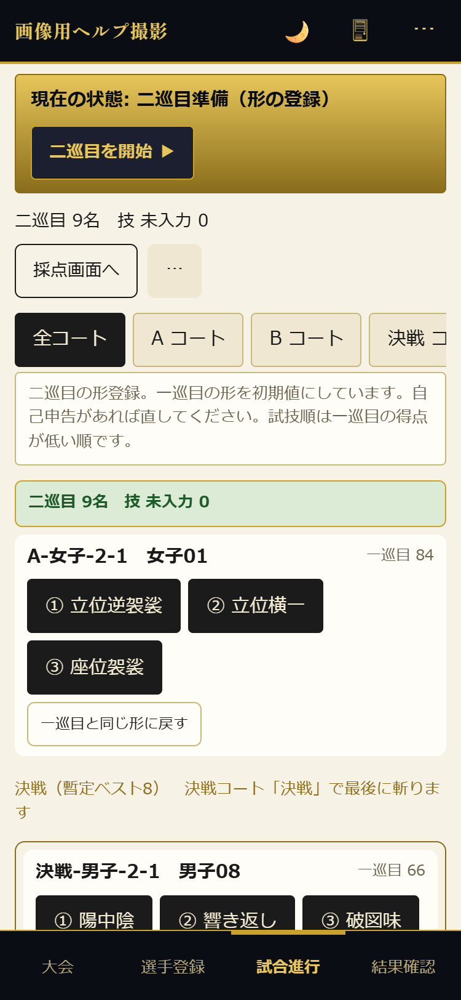
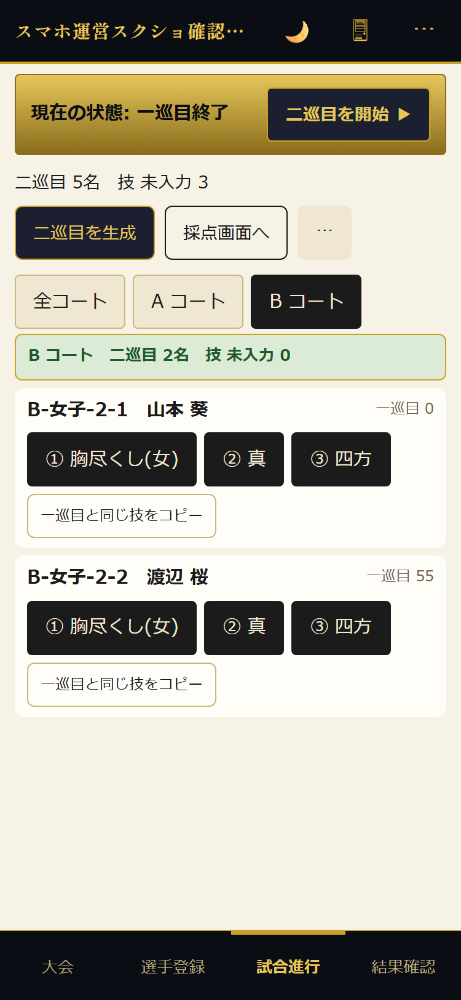
決戦（暫定ベスト8）
一巡目を終了したとき、一般男子（新人を含む）の一巡目の得点の上位8名を 決戦 として専用のコートに移します。8位が同点のときは同点の全員が入ります。得点が0点の選手は入りません。一般女子は決戦には入りません。
- 決戦コートの名前は 基本情報 の 決戦コートの名前 で変えられます（既定は 決戦）。
- 決戦の試技順は 一巡目の得点が低い順です（最後に斬るのが一巡目の1位）。
- 決戦の1本で最終得点が決まります（3本目はありません）。
- 決戦の暫定順位は 発表モード の 決戦、配信用ボード（決戦コートを映しているとき）、共有リンク に出ます。斬った人から順に埋まります。
通信が切れても続けられます
採点はいったん端末に貯めてからサーバーへ送ります。電波が弱くても、採点そのものは止まりません。
- ● 保存済み — サーバーまで届いています。
- ◌ 保存中… — いま送っているところです。
- ⚠ 未保存 3 件・再送中 — まだ届いていない採点があり、送り直しています。そのまま採点を続けてかまいません。
- 最初の失敗から30秒たっても残っていると、上に ⚠ サーバーに保存できていません のバナーと 今すぐ再試行 ボタンが出ます。通信を確かめてから押してください。
貯めた分は端末の中（ブラウザの保存領域）にも控えます。電池切れやアプリの再起動で消えることはありません。次にその端末で採点画面を開くと 前回未送信の採点 n 件を送信します。 と出て、自動で送り直します。
ほかの端末が書いた内容の取り込み
選手を切り替えたときと、ほかのアプリから採点画面に戻ってきたときに、サーバーから読み直します。運営画面や別のコートが付けた確定・備考・得点は、このときに画面へ入ります。
3. 得点の集計
得点の式
選手の合計 ＝ 技ごとの得点の合計 ＋ 全体補正点
- 「失敗」と「未」は0点です。打たない太刀（灰色のセル）も0点です。
- 補正点は整数です。マイナスも入れられます。
- 備考は得点に入りません。
技の配点を変える
配点は 技術リスト編集（techniques.html）で大会ごとに変えられます。画面の上の 編集する対象 で大会を選び、技名ごとに 初太刀 から 四ノ太刀 までの点を入れ、保存 を押します。PC 用は左の 技と配点 から同じことができます。
- 雛形（新規大会の初期値） を変えても、すでにある大会の配点は変わりません。雛形はこれから作る大会に入る初期値です。
- 雛形に戻す を押すと、その大会の配点を雛形の内容で置き換えます。
- 別の大会からコピー で、ほかの大会の配点を表に読み込めます。保存 を押すまでは反映されません。
- 抜刀後 は「抜刀してからの形」の印です。真剣レンタルの選手は、ここにチェックが付いている形だけを選べます。どの形を抜刀後とするかは大会ごとに運営が決めます（既定では 立位袈裟 立位逆袈裟 立位横一 座位袈裟 座位逆袈裟 座位横一 の6形に付いています）。
- 回数制限なし にチェックが付いている形は、同じ巡の中で1人が何度選んでも構いません（既定では上の抜刀後の6形だけ）。チェックが無い形は、1人の3枠のうち同じ巡で1回までです（§1 の「技の選び方」）。
- 減点初太刀 は、初太刀が減点扱いで成功したときの点です（胸尽くしなど、切先が鞘から抜けていた状態での成功）。空欄なら減点の状態そのものが出ません。数値を入れると、採点画面のその技の初太刀だけ 未 → 成功 → 減点 → 失敗 → 未 と一段増えます（既定では 胸尽くし(男) 胸尽くし(女) に4点）。
部門と順位
- 部門は 一般男子・一般女子・新人 の3つです。
- 新人にチェックが付いた選手は、新人の部にも、男子または女子の部にも入ります。どちらか一方ではありません。
- 順位は同じ名前の選手の得点を足し合わせて付きます。つまり一巡目と二巡目の合計で並びます。
- 同点は同順位です。同点が2人いたら、次の人は3位になります。
確認する場所
- PC 用運営画面の「結果確認」 — 一般男子 新人 一般女子 の3部門が横に3列で並びます。↻ 最新に更新 でサーバーの最新の順位を読み直します。
- スマホ用運営画面の結果確認タブ — 同じ内容が縦に並びます。最新に更新 で読み直します。
- 順位表示ページ（
ranking.html） — 大会を選んで 大会データを読み込む。HTMLダウンロード で1枚の成績表として保存できます。 - 運営画面の「試合進行」タブ — ⋯ → CSVエクスポート で全選手の内訳を保存できます。
- 採点画面 — CSVエクスポート で全選手の内訳を、HTML保存 で成績表を保存できます。
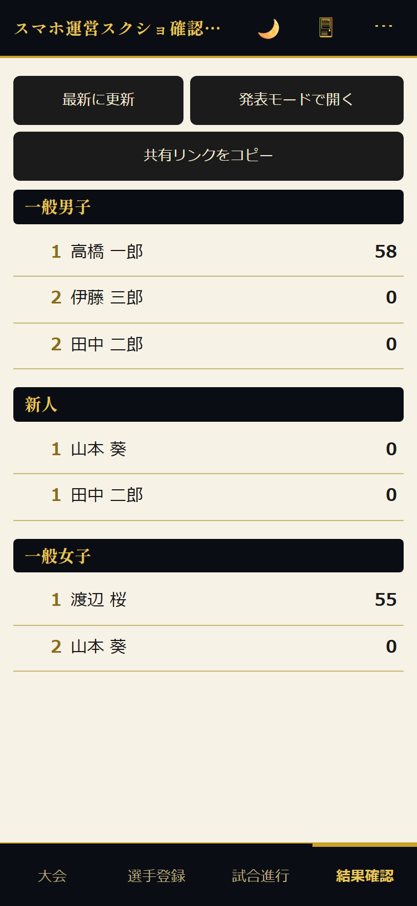
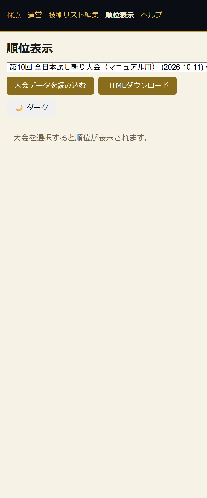
4. サイト掲載（共有・発表）
順位の見せ方は2通りあります。どちらも運営画面の 結果確認 タブから始めます。
参加者に配る（共有リンク）
- 運営画面の 結果確認（PC 用）または結果確認タブ（スマホ用）で 🔗 共有リンクをコピー を押す。
- 共有リンクをコピーしました（スマホ用は リンクをコピーしました）と出たら、その URL を配ります（コピーできない環境では、URL がそのまま表示されます）。
- URL は
share.html#（トークン）の形です。大会ごとに1本で、何度押しても同じ URL が返ります。 - 受け取った人は、ログインなしで順位だけを見られます。採点や書き換えはできません。
- ページを開いたままにしておくと、60秒ごとに自動で最新の順位に変わります。配り直す必要はありません。
- 決戦 進行中 は、部門ごとの順位の上に 決戦（暫定） の表が出ます。斬った人から合計と順位が埋まります。
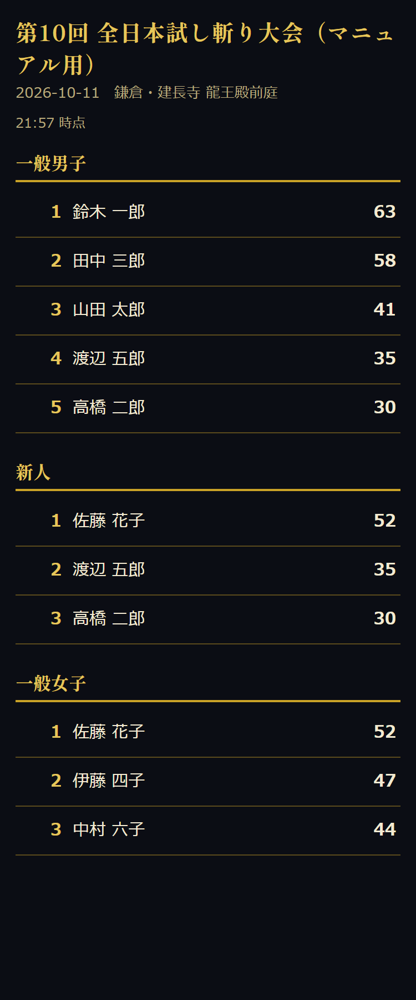
会場の大画面で見せる（発表モード）
結果確認タブで 発表モードで開く を押すと、新しいタブで発表モードが開きます。会場のプロジェクターやテレビにつないだ端末で押してください。
上に 掲示 発表 決戦 更新 全画面 のボタンがあります。決戦 進行中 の大会は、開いた時点で自動的に 決戦 モードになります。
掲示
- 部門ごとの順位をそのまま映します。上位3人は大きく出ます。
- 画面をタップするか → キーで次の部門、← キーで前の部門に移ります。
- 60秒ごとに順位を自動で取り直します。採点中に出しておけば、そのまま更新されます。
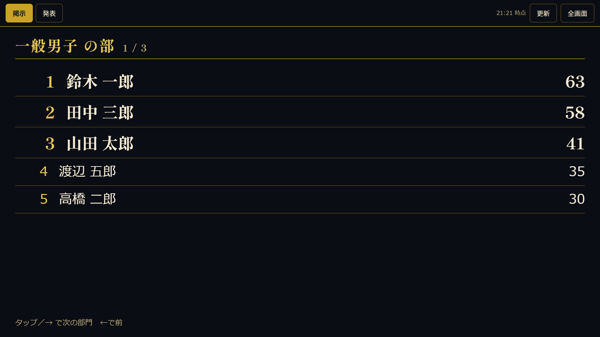
発表
- 発表 を押すと、まず 部門を選んでください が出ます。部門のボタンを押します。
- タップするたびに、下位から1人ずつ順位が開きます。最後が1位です。
- 全員開き終わると、次の部門に進めます。
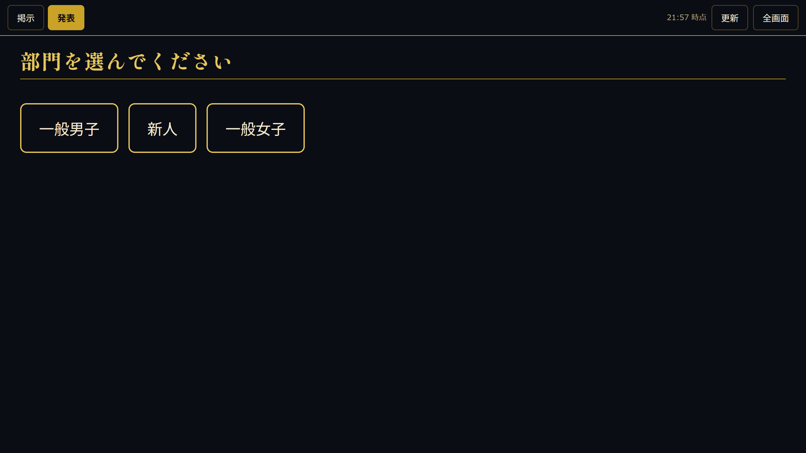
決戦
- 暫定ベスト8 が試技順に並びます。斬った人から合計と暫定順位が埋まり、まだの人は「n番」と「—」のままです。
- 60秒ごとに自動で取り直します。掲示・発表 に切り替えても、あとで 決戦 に戻れます。一度自分でモードを選ぶと、決戦が終わるまでは自動では切り替わりません。
YouTube 配信（OBS）に映す
コートで今どの選手を採点しているかを、配信の画面にそのまま映せます。A コート・B コートで1つずつ、配信用ボードというページを OBS の ブラウザソース として並べます。見るだけのページなので、配信 PC から採点が書き換わることはありません。
- PC 用運営画面の 結果確認 を開き、下の 配信用ボード でコートのボタン（📺 A コートの URL をコピー）を押します。そのコートのアドレス（
board.html#（トークン）/A）がそのまま写ります。 - スマホ用の運営画面しか使えないときは、共有リンクをコピー で取った
share.html#（トークン）のshare.htmlをboard.htmlに書き換え、末尾に/Aを足します（例:board.html#O7KVvuj-/A）。B コートは末尾を/Bにします。コート名は運営画面で付けたものをそのまま書きます。 - OBS で ソース の ＋ から ブラウザ を選び、URL にそのアドレスを入れます。幅 960・高さ 540（大きく映すなら 1920・1080）にします。
- A と B の2つを作って画面に並べます。
- 映像の上に重ねるときは、アドレスの
board.htmlのすぐ後ろに?bg=transparentを付けます（board.html?bg=transparent#（トークン）/Aの順。#より後ろに付けても効きません）。背景が透けて、帯と表だけが乗ります。 - コートの端末で選手を切り替えたり、タイマーを動かしたりすると、2〜3秒で配信側も追随します。配信 PC で操作することはありません。
- 配信に映すコートの端末では、採点画面のコートを必ずそのコートに選んでください（全コート のまま別のコートの選手へ移ると、前のコートのボードが前の選手を映したままになります）。
- 共有リンクを作り直した（トークンが変わった）ときは、OBS のブラウザソースの URL も直して 現在のページを再読み込み してください。古いトークンのままだと このリンクは無効です と出ます。
- そのコートでまだ誰も開いていないときは 待機中 と出ます。採点画面でその大会とコートを選べば映り始めます。
- 採点が 確定 済みの選手は、得点と合計が青くなり 確定 の札が付きます。
- 通信が途切れても直前の表示は消えません。右下に小さく 更新できません と出るだけで、つながれば自動で戻ります。
- 決戦コートを映しているボード（
board.html#（トークン）/決戦など）は、採点表の下に 決戦（暫定） の順位表も出ます。決戦以外のコートには出ません。
大会をファイルに保存する
大会1件を丸ごと1つのファイルに書き出せます。大会が終わったあとの控えや、別のサーバーへの持ち出しに使います。
- 運営画面の 大会一覧（PC 用）または大会タブ（スマホ用）で、その大会の行の ⋯ を押す。
- 💾 ファイルに保存 を押す。
tameshigiri_日付_大会名.jsonがダウンロードされます。
大会を選んでいるときは、右上の ⋯ → 💾 大会をファイルに保存 からも同じことができます。
5. 困ったとき
「技が未入力です。運営画面の試合進行で技を入力してください。」と出る
その選手にまだ技が入っていません。運営画面の 試合進行 タブでその選手の ① ＋ ② ＋ ③ ＋ をタップして技を入れてください。一巡目と同じ形に戻す でもかまいません。
「内訳を復元できません（技の数が変わっています）。」と出る
採点したあとで技の数が変わった選手です。前の内訳はもう表に戻せません。その場で採点し直してください。
表に触ると 記録済みの n点 を、いま入力する内容で置き換えます。よろしいですか？ と確認が出ます。OK を押してから採点し直してください。
採点し直すまでは、その選手のデータは書き換えられません。選手を切り替えても得点は消えないので、あわてなくて大丈夫です。備考 だけは、復元できない選手でもそのまま保存できます。
「⚠ 未保存 n 件・再送中」が消えない
サーバーに届いていない採点が残っています。
- 端末の通信（Wi-Fi・電波）を確かめる。
- 端末を閉じずにそのまま待つ。つながれば自動で送られます。
- バナーの 今すぐ再試行 を押す。
閉じてしまっても、同じ端末の同じブラウザで採点画面を開き直せば 前回未送信の採点 n 件を送信します。 と出て送り直せます。ただし別の端末からは送れないので、できるだけ ● 保存済み になってから閉じてください。
「保存できなかった採点が n 件あります」と出る
送ろうとした選手が、サーバーの名簿からいなくなっています。名簿を クリアして読み込む で入れ直した直後や、その選手を選手登録タブで削除したあとに起きます。入れ直すと選手の ID が変わるため、その前に採点していた分は送り先を失います。
ダイアログに選手 ID と点数が並びます。該当する選手を採点画面で開き、採点を確認して入力し直してください。
技が見つからない
技を選ぶシートの絞り込みに出てこない、あるいは採点表の行がまるごと灰色になるときは、その技名が 技術リスト編集 にあるか確かめてください。配点は大会ごとなので、その大会を選んでから確かめます（画面の上の 編集する対象）。PC 用は左の 技と配点 です。
対処は2つあります。
- 使っていない行の技名と配点を書き換えて 保存 する。
- 選手の技を、リストにある名前に直す。運営画面の選手登録タブで選手をタップ → 選手を編集 のシートで技の枠から選び直します。
技名は完全に一致したものを探します。前後に空白が入っていると別の技として扱われ、配点が0になります。
二巡目ができていない
一巡目を終了 ▶ を押すと自動でできます。できていなければ一巡目に戻してもう一度押してください。一巡目の選手が1人も登録されていないか、通信が切れている場合もできません。選手登録タブと端末の通信を確かめてください。コートが決まっていない選手の扱いは §2「二巡目の並び順」を見てください（その選手の二巡目は作られません）。
大会のファイルを取り込めない
- ファイルを読めませんでした。 — 選んだファイルがこのアプリの書き出したものではありません。CSV や画像ではなく、
tameshigiri_…jsonを選んでください。 - このアプリのエクスポートファイルではありません。 — 中身は JSON ですが、このアプリの形式ではありません。⋯ → 💾 ファイルに保存 で作ったファイルか確かめてください。
- 対応していないファイル形式です（version: …） — 新しい版のアプリが書き出したファイルです。取り込む側のアプリを更新してください。
- そのほかの理由（大会名が空、選手が多すぎる、技リストの n 行目が不正）はそのまま画面に出ます。書き出した側でその大会を直してから、もう一度保存し直してください。
このマニュアルの開き方
- 採点画面・技術リスト編集・順位表示 — いちばん上のリンクの右端 ヘルプ。
- 運営画面（PC 用
desk.html） — ヘッダーの ❓（🌙 の左）。 - 運営画面（スマホ用
admin.html） — 右上の ⋯ → ❓ ヘルプ。
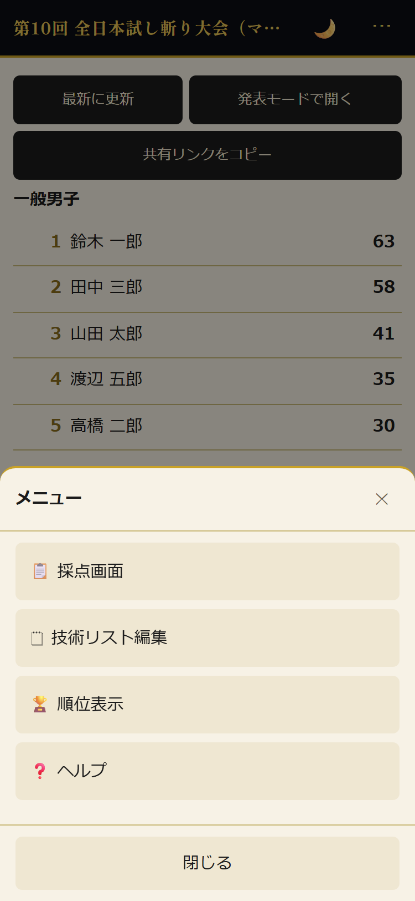